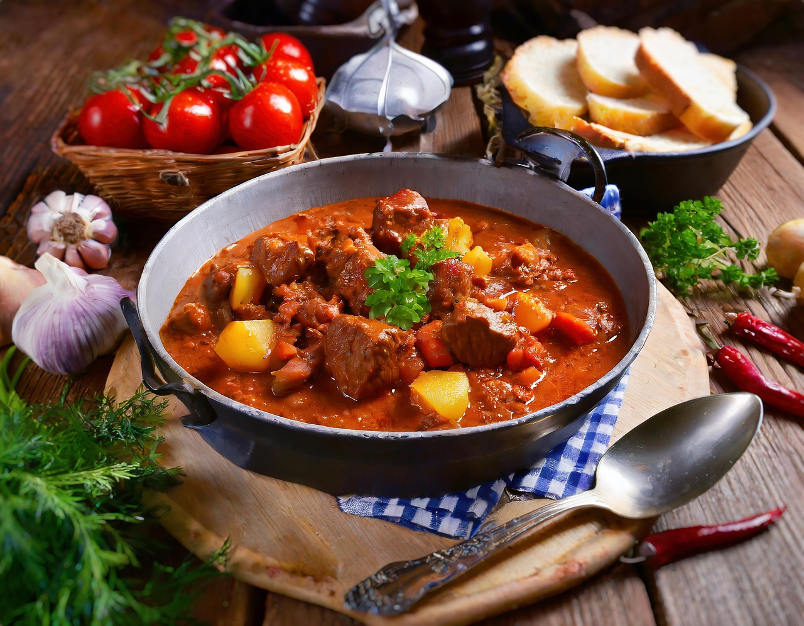

Gulasch Oma´s Art

Zubereitung
Die Zwiebeln, Karotte und Sellerie in kleine Würfel schneiden.
Alles mit Butterschmalz kräftig anbraten. Tomatenmark zugeben und andünsten. Mit dem Rotwein und der Brühe
ablöschen und zum Kochen bringen. Jetzt erst das gewürfelte Fleisch dazu geben, wieder aufkochen und bei kleiner
Hitze mit den Lorbeerblättern ca. 2 Stunden köcheln lassen.
Dazu schmecken Knödel und Blaukraut.
Rezept erstellt von